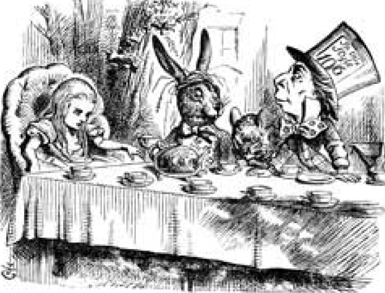

Алиса в Стране чудес
Материал из Википедии - свободной энциклопедии

Содержание
История создания
Первая публикация «Алисы» состоялась 4 июля 1865 года,ровно через три года после того,как Его Преподобие Чарльз Доджсон и Его Преподобие Робинсон Дакворт на лодке поднялись вверх по Темзе в обществе трёх девочек
Сюжет
Алиса бежит за Белым Кроликом и внезапно проваливается в глубокую кроличью нору,которая выводит её в загадочную комнату с множеством закрытых дверей.
Персонажи
Ввиду разнообразности вариантов перевода каждого имени персонажа ниже представлена таблица с указанием различных переводов
| Демурова | Оригинал | Набоков | Заходер | Щербаков | Яхнин |
|---|---|---|---|---|---|
| Алиса | Alise | Аня | Алиса | Алиса | Алиса |
| Болванщик | Hatter | Шляпник | Шляпа | Шляпочник | Котелок |
Критика
Большая часть критических отзывов на книгу положительны,хотя иногда критикуют(но чаще хвалят)странный непредсказуемый сюжет.
Отзывы британских критиков
В Великобритании первые отзывы на книгу были весьма критичны: за редкими исключениями рецензенты отказывались видеть хоть какой-то смысл в «блужданиях» Алисы.Отношение критики изменилось лишь спустя несколько десятилетий.
Отзывы во всем мире
В 1931 «Алиса» попала в список запрещенных книг в китайской провинции Хунань, поскольку «животные не должны говорить человеческим голосом» и «нельзя показывать животных и людей равными»
Отзывы в России
Отзыв из журнала «Женское образование»:
Есть книги, о которых и десяти слов сказать не хочется, до того они ниже всякой критики.Лежащее перед нами издание принадлежит именно к их числу. Бессодержательнее и нелепее этой сказки или,вернее,просто небывальщины(так как в создании сказки предполагается участие фантазии)трудно себе что-нибудь представить.Советуем всем матерям пройти мимо этого никуда не годного измышления,не приостанавливаясь ни на минуту.